Aircraft Parts Image


 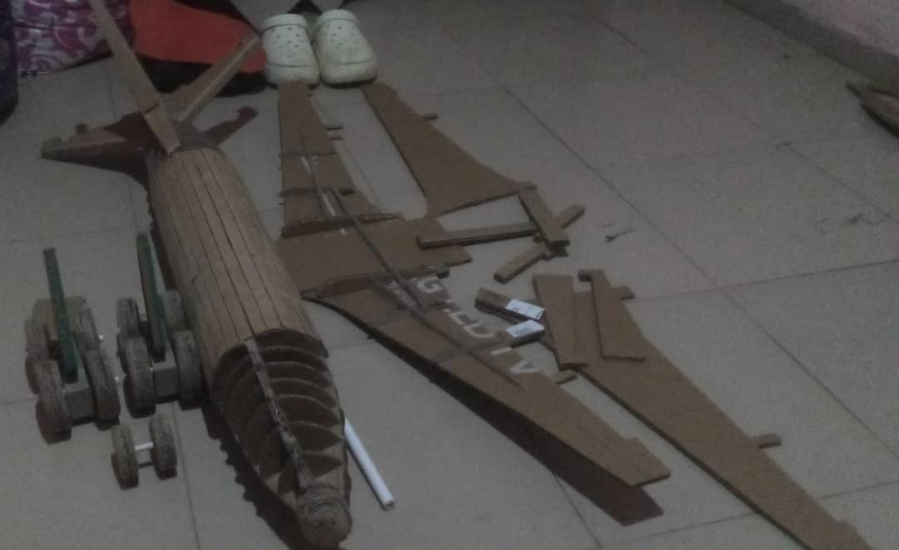
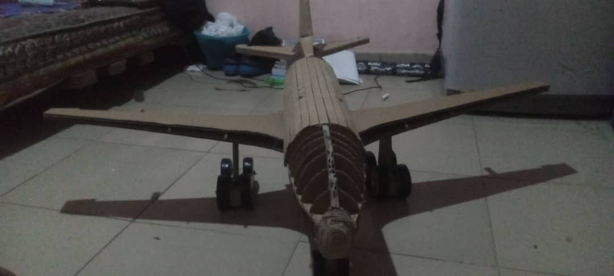
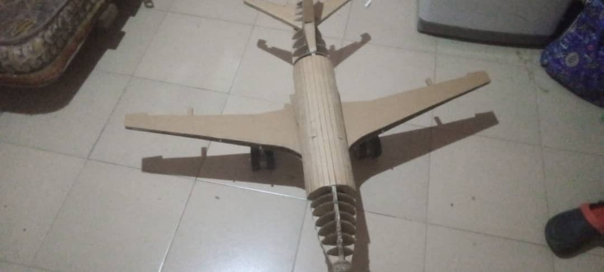
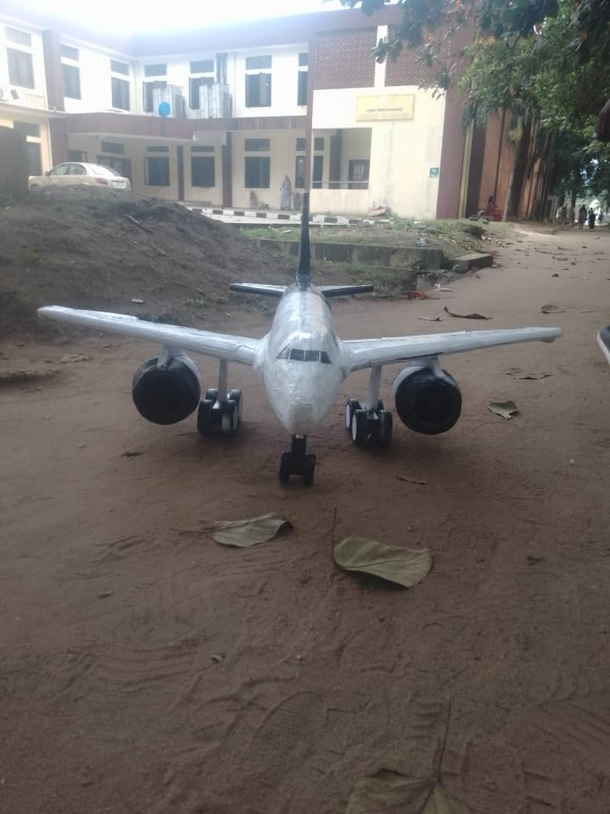
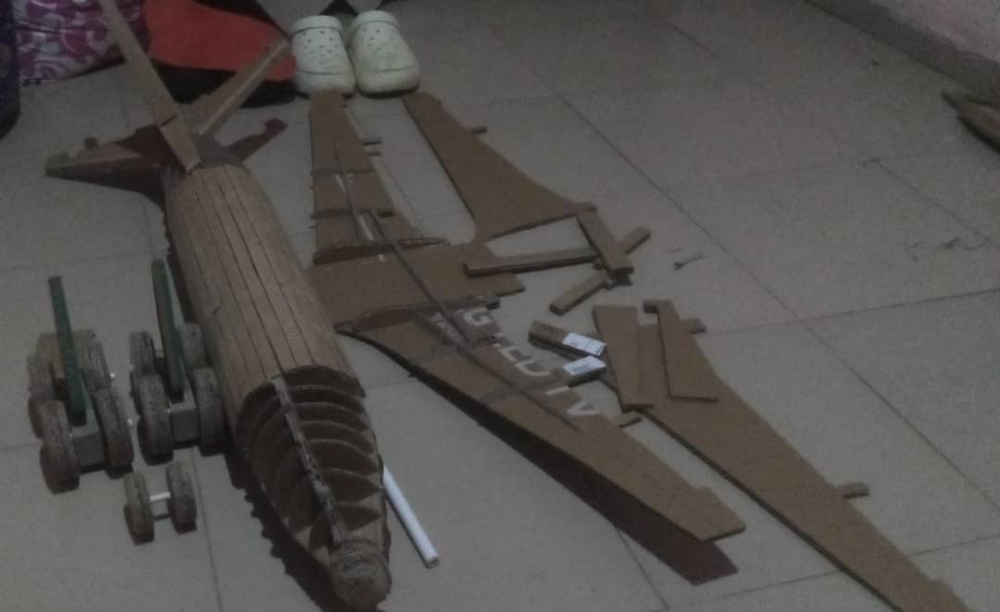
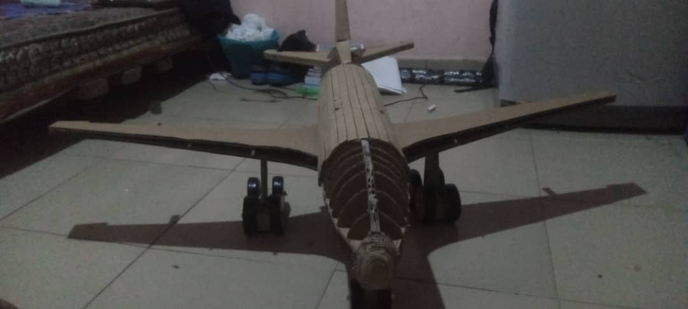
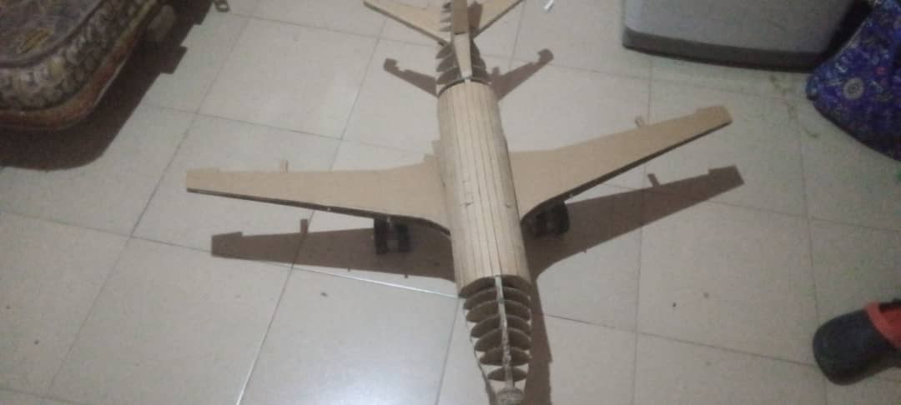
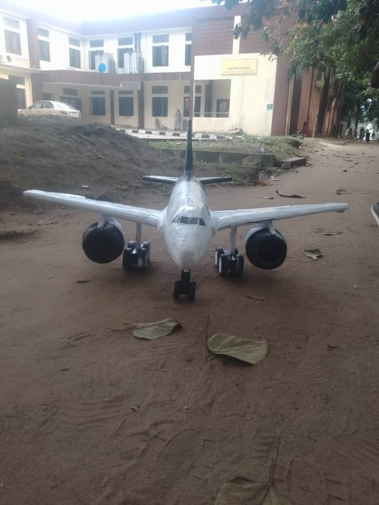
The Airbus A320 is one of the most widely used narrow-body commercial aircraft in aviation today. Known for its efficiency, versatility, and advanced technology, the A320 family has become the backbone of short- to medium-haul airline fleets worldwide, serving routes ranging from domestic flights to regional international connections.
The Airbus A320 family uses Jet-A or Jet-A1 fuel, both of which are kerosene-based aviation fuels. The difference between the two lies mainly in their freezing points and specific applications.
Jet fuel is composed of a complex mixture of hydrocarbons, primarily derived from crude oil. These include:
The fuel also contains additives to improve performance, including:
The Airbus A320neo is particularly notable for its fuel efficiency, thanks to advanced engines and aerodynamics, such as the sharklets. Compared to earlier models, the A320neo consumes about 15% less fuel, reducing carbon emissions and operating costs. The introduction of Sustainable Aviation Fuel (SAF) compatibility further enhances its environmental credentials, allowing airlines to reduce their carbon footprint while maintaining operational efficiency.
The Airbus A320 family is renowned for its cutting-edge technology, safety, and fuel efficiency, making it a preferred choice for airlines across the globe. With its use of efficient Jet-A/Jet-A1 fuel and its compatibility with sustainable aviation fuels, the A320 is setting benchmarks for modern, eco-friendly aviation. Whether flying the A320-200 or the A320neo, passengers and airlines alike benefit from its advanced design and cost-effective performance.
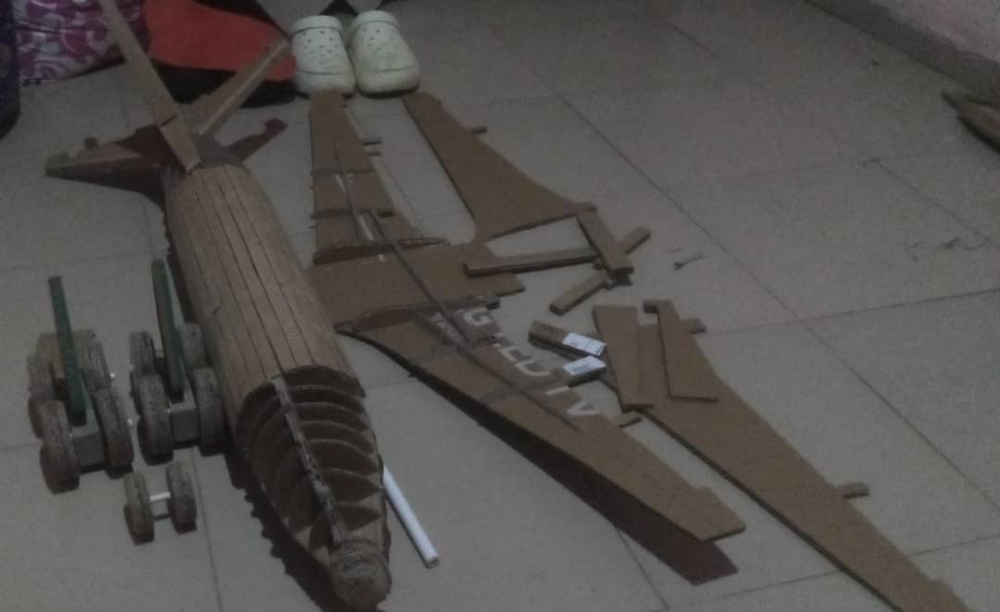
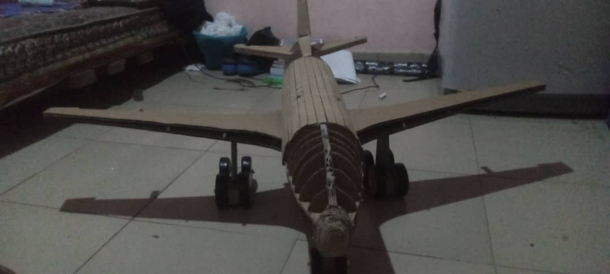
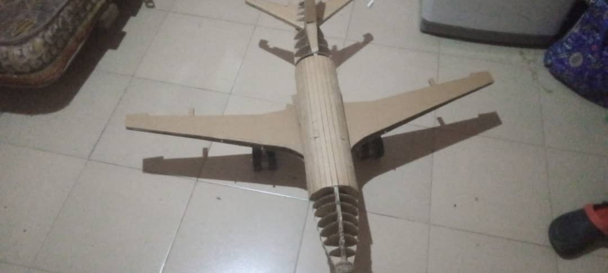
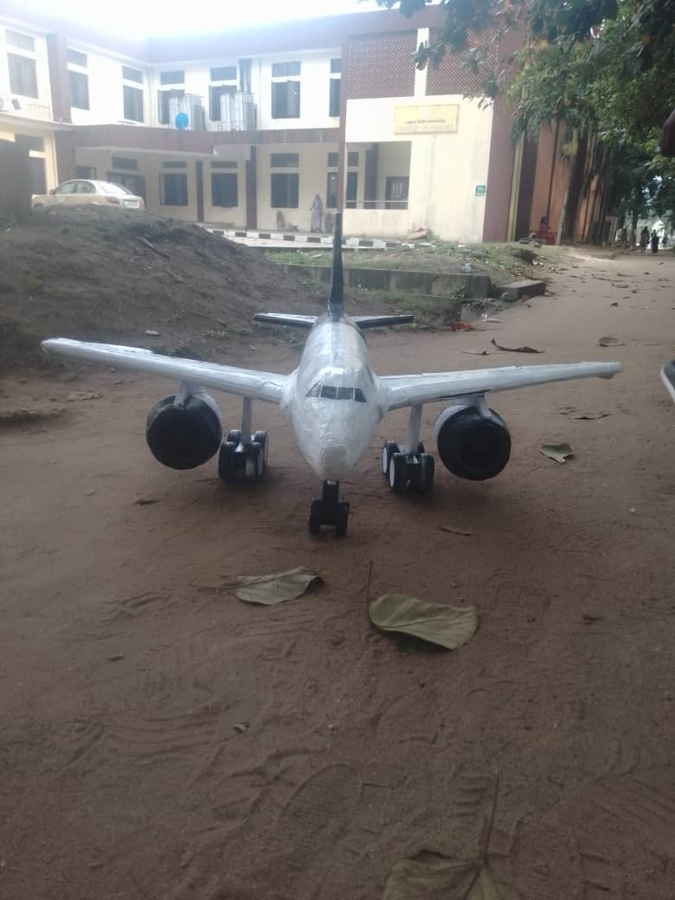
Group Members:
| Name | Matric Number |
|---|---|
| Iwalokun Doyinsola Diana | 230251022 |
| Adeyemi Sholape Wulaimat | 230251093 |
| Shuaib Fathia Oluwagbemisola | 230251028 |
| Omosanya Basit Ayomide | 230251072 |
| Ugwu Emmanuel Ikechukwu | 230251078 |
| Apoedeh Michael Oluwatimileyin | 230251085 |
| John Goodness Enejo | 230251008 |
| Adejuwon Damilola Ahmed | 230251014 |
| Onwukanjo Chimaroke John | 230251011 |